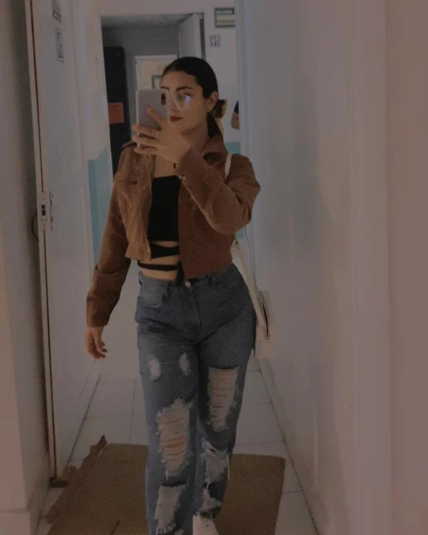

¡ Bienvenido a mi página personal !

Biografía
Mi nombre es Daniela León Hernández , tengo 26 años y vivo en Villahermosa,Tabasco. Estudie Ingenieria Ambiental en el Tecnologico de Villahermosa. Tengo una familia muy bonita, Tengo a mis padres y 2 hermanos: Faty y Mario; son lo mas importante que tengo.
Mayor Logro:
Mi mayor logro hasta ahora ha sido Terminar mi carrera universitaria. Este logro significó mucho porque mi abuelita formo parte de ese logro.
Bebidas Favoritas:
- Café
- Polvillo
- Avena con cacao
- Jugo de naranja
- Horchata
- Guanabana
Música Favorita:
- Eres tu - Carla Morrison
- Idontwannabeyouanymore- Billie Eilish
- The Scientist - Coldplay
- Creo en mi - Natalia Jimenez
- Lost On You - LP
Lista Descriptiva:
- Función:
- En programación, una función es un bloque de código reutilizable que realiza una tarea específica.
- Let:
- "let" es una palabra clave en JavaScript que se utiliza para declarar una variable con alcance de bloque.
- Const:
- "const" es una palabra clave en JavaScript que se utiliza para declarar una variable cuyo valor no cambia una vez asignado.
- Etiqueta HTML:
- Existen muchas etiquetas HTML, pero tres menos comunes podrían ser:<mark> ; para resaltar texto, <figure>; para agrupar contenido multimedia y <cite>; para citar referencias.
Otros Datos:
- Mis Mascotas:
- Doki
- Mora
- Max
2. Mis Platillos Favoritos:
- Spaguetti
- Empanizado
- Mole